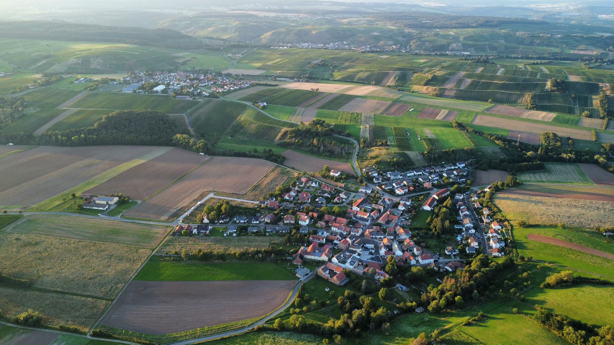

Agroturismo e o novo olhar da cidade sobre o campo
>O agroturismo realmente representa uma mudança na forma como as cidades enxergargam o campo,e
virce-versa. O novo olhar é o reconhecimento do campo como um espaço de aprendizado vivo.

Conectando a Cidade à Essência Rural
O agroturismo está tranformando a forma como a cidade enxerga o campo.Ele oferece aos moradores urbanos uma
chance ùnica de se reconectar com a vida
rural, participando de atividades agrícolas, aprendendo sobre a origem dos alimentos e desfrutando da
tranquilidade do ambiente.
É uma via de mão dupla que fortalece os laços entre o urbano e o rural, promovendo uma maior compreensão e
respeito mútuo.

Referências
Site G1. Acesso em 17 de maio de 2025.
OpenAI. Textos gerados pelo ChatGPT sobre o tópico "Agroturismo e o novo olhar da cidade sobre o campo". 17
de maio de 2025,
https://chat.openai.com.